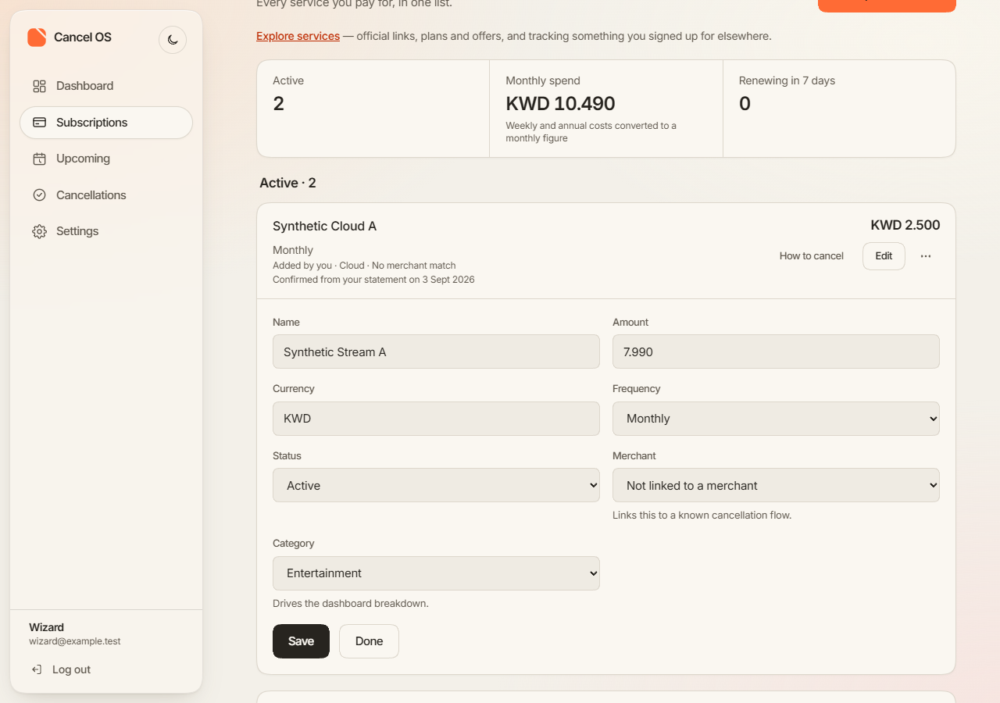
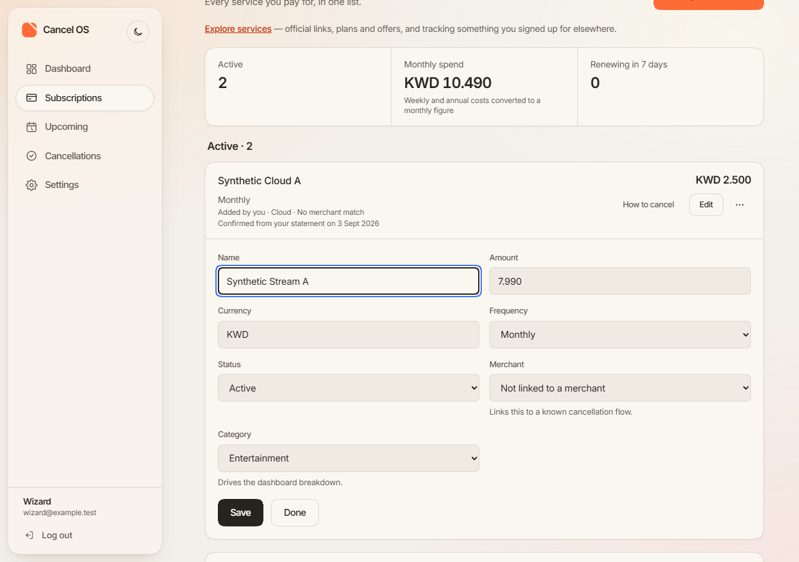
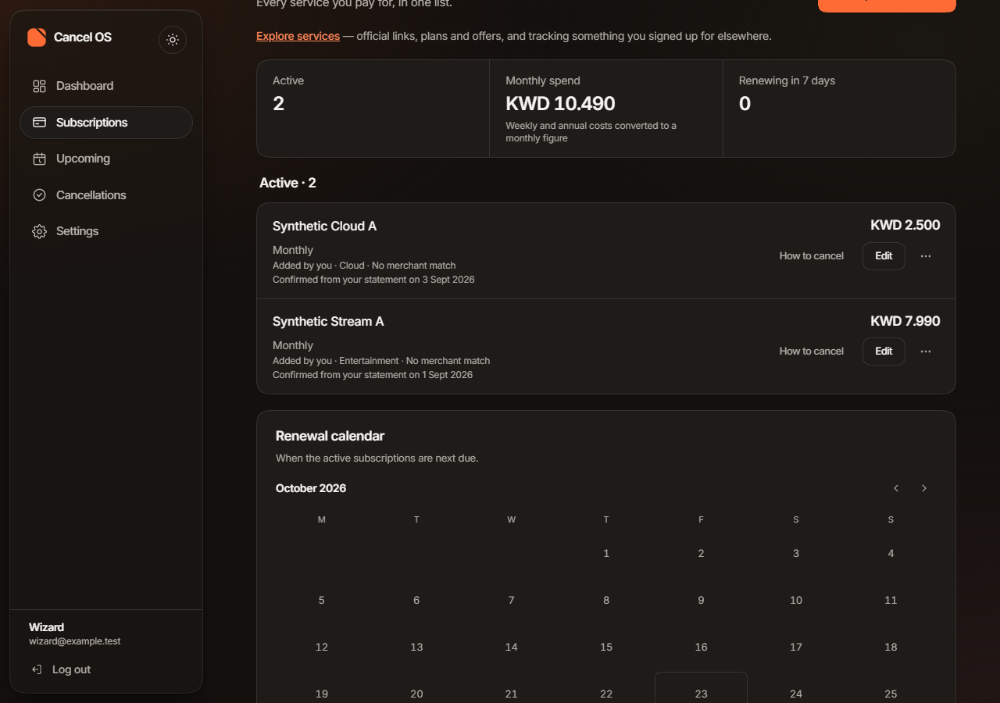
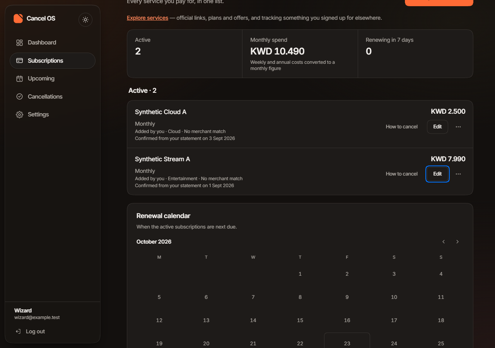
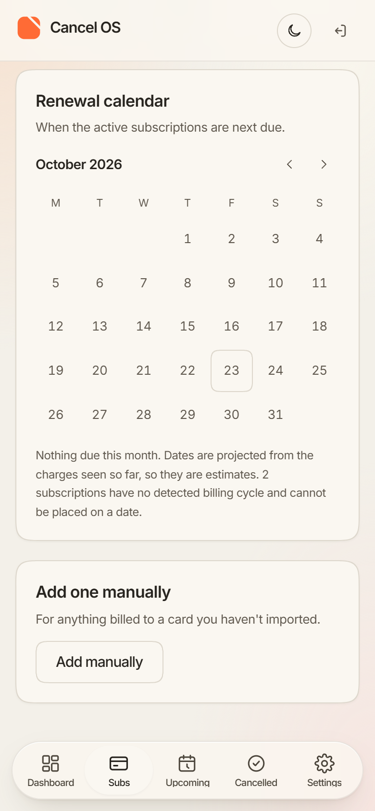
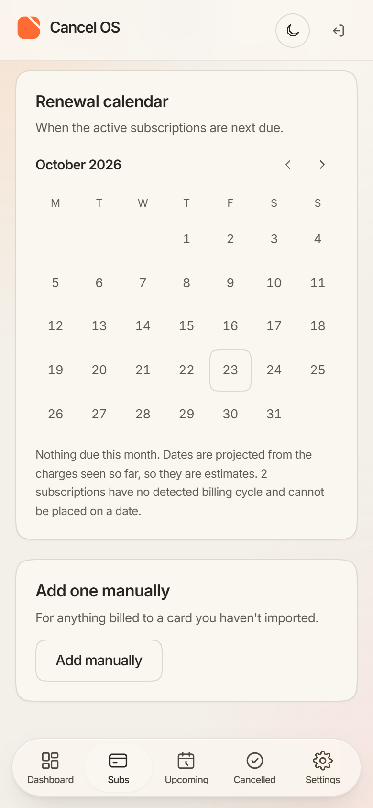
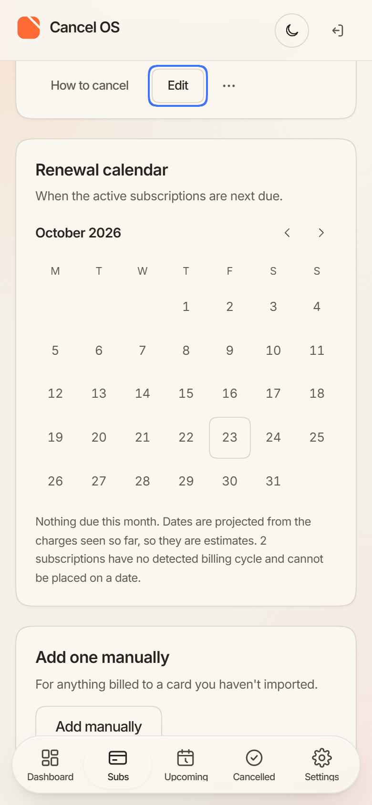
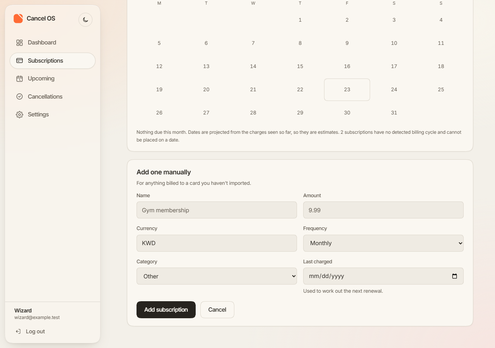

Cancel OS · Earlier reviews: premium identity, glass and depth, refine 2
A small slice on the website's Subscriptions page, on top of the refine-2 layout accepted at daf2e7b.
The layout, palette and identity are unchanged. Android is unchanged in this slice and is not shown.
Every screen uses synthetic test data (account wizard@example.test, services named "Synthetic …")
on a local stand-in server, in headless Chrome 155. No real person's data appears.
Still pending: motion approval, screen readers, physical devices and the release build. Browsers other than Chrome and performance on real hardware were not tested.
This is a public preview. Anyone with the link can open it. It asks search engines not to index it, but that is a request, not access control.
8c30c11, 13.07 s at real speed1280 × 900, light, motion on (set explicitly; headless Chrome on the recording machine defaults to reduced motion). Keyboard only for the editor, and nothing is saved. Captions are drawn into the frame, with the take's clock:
Focus, from the recording log (log), not only from the picture:
button "Done";button "Edit".
Focus fell to the page.

Focus is in Name.

Focus on the page.

Focus back on the row's Edit, in view.

No control has focus.

The defect, as first published. The 05eaa5f code: focus on Edit, but Edit is under the top bar.

Built from 49b86de, same script and data: Edit, focused, just below the top bar.
Fixed in 49b86deAt 390 px the returned focus was hidden
under the top bar. The historical capture above keeps the defect on record.
8c30c11's code, after Done, focus was on the row's Edit, but Edit sat at 0–36 px, entirely
under the 64 px sticky glass top bar. A point at its centre landed on the bar (WCAG 2.2, 2.4.11, focus not
obscured).49b86de, after focusing, a small helper scrolls the least distance that clears the mobile top bar
and bottom tab bar. It measures them where they are at that moment; nothing moves when the control is
already clear, and the scroll is instant, not animated. It is used for Done → Edit and Edit → Name.49b86de6.99 s of interaction at real speed, then about 0.6 s held on the final frame (the MP4 is 7.60 s; the encoder held the last frame at the end). Light, motion on, keyboard only; nothing is saved. Captions are drawn into the frame:

?edit=<row id>. Not verified. Product analytics and security
reports drop the query string.https://raw.githubusercontent.com/YahyaLendani/cancel-os-design-review/main/polish-1/index.html (this page's source, as text)https://raw.githubusercontent.com/YahyaLendani/cancel-os-design-review/main/polish-1/assets/polish1-web.mp4https://raw.githubusercontent.com/YahyaLendani/cancel-os-design-review/main/polish-1/assets/record-polish1.txthttps://raw.githubusercontent.com/YahyaLendani/cancel-os-design-review/main/polish-1/assets/focus390-49b86de.mp4https://raw.githubusercontent.com/YahyaLendani/cancel-os-design-review/main/polish-1/assets/corrected-49b86de-row-after-done-390-light.pnghttps://raw.githubusercontent.com/YahyaLendani/cancel-os-design-review/main/polish-1/assets/polish1-web-keyframes.pnghttps://raw.githubusercontent.com/YahyaLendani/cancel-os-design-review/main/polish-1/assets/after-manual-form-placeholders-1280-dark.pnghttps://raw.githubusercontent.com/YahyaLendani/cancel-os-design-review/main/polish-1/assets/after-manual-form-placeholders-1280-light.pnghttps://raw.githubusercontent.com/YahyaLendani/cancel-os-design-review/main/polish-1/assets/after-manual-form-placeholders-390-light.pnghttps://raw.githubusercontent.com/YahyaLendani/cancel-os-design-review/main/polish-1/assets/after-row-after-done-1280-dark.pnghttps://raw.githubusercontent.com/YahyaLendani/cancel-os-design-review/main/polish-1/assets/after-row-after-done-1280-light.pnghttps://raw.githubusercontent.com/YahyaLendani/cancel-os-design-review/main/polish-1/assets/after-row-after-done-390-light.pnghttps://raw.githubusercontent.com/YahyaLendani/cancel-os-design-review/main/polish-1/assets/after-row-editor-open-1280-dark.pnghttps://raw.githubusercontent.com/YahyaLendani/cancel-os-design-review/main/polish-1/assets/after-row-editor-open-1280-light.pnghttps://raw.githubusercontent.com/YahyaLendani/cancel-os-design-review/main/polish-1/assets/after-row-editor-open-390-light.pnghttps://raw.githubusercontent.com/YahyaLendani/cancel-os-design-review/main/polish-1/assets/before-manual-form-placeholders-1280-dark.pnghttps://raw.githubusercontent.com/YahyaLendani/cancel-os-design-review/main/polish-1/assets/before-manual-form-placeholders-1280-light.pnghttps://raw.githubusercontent.com/YahyaLendani/cancel-os-design-review/main/polish-1/assets/before-manual-form-placeholders-390-light.pnghttps://raw.githubusercontent.com/YahyaLendani/cancel-os-design-review/main/polish-1/assets/before-row-after-done-1280-dark.pnghttps://raw.githubusercontent.com/YahyaLendani/cancel-os-design-review/main/polish-1/assets/before-row-after-done-1280-light.pnghttps://raw.githubusercontent.com/YahyaLendani/cancel-os-design-review/main/polish-1/assets/before-row-after-done-390-light.pnghttps://raw.githubusercontent.com/YahyaLendani/cancel-os-design-review/main/polish-1/assets/before-row-editor-open-1280-dark.pnghttps://raw.githubusercontent.com/YahyaLendani/cancel-os-design-review/main/polish-1/assets/before-row-editor-open-1280-light.pnghttps://raw.githubusercontent.com/YahyaLendani/cancel-os-design-review/main/polish-1/assets/before-row-editor-open-390-light.png